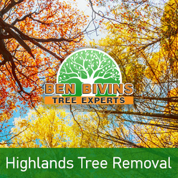
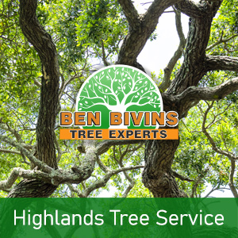

If you and your family need tree service in Highlands or tree removal in Highlands, your search is over. Ben Bivins Tree Service has been providing professional tree services to Highlands for years.
Facts About Highlands Tree Removal

Do you possess a dead or unattractive tree which needs to be removed? Tree removal is really a hazardous job which requires the correct equipment and safety practices. Despite the fact that it might be appealing to get rid of a tree yourself from your residence, it’s really a decision that puts someone in jeopardy, without the proper training. There can be numerous reasons why you need a tree removal in Highlands:- Tree is blocking too much sunshine in your yard
- Tree is lifeless or unsafe and a probable safety threat
- Tree is too large and presents a danger if big limbs fall
- Tree was damaged in a weather event and is past the level of preserving
- You are planning on renovations that could ultimately harm the trees
- Tree is losing a great number of limbs, leaves, or pine needles
Ben Bivins Tree Experts is fully insured and qualified tree company. Don’t take the risk of hiring an uninsured tree removal company or relying on a friend or family member to perform this type of work. Our staff is expertly qualified and our company carries the proper credentials to make sure your Highlands tree removal will be conducted in the safest and most efficient way possible. Tree removal demands the use of serious machinery and dangerous equipment that should only be left to the professionals. Leave it to Ben Bivins Tree Experts! Contact us today for a quote for your Highlands tree removal.
Tree Service in Highlands NJ – A glance at Our Services

We carry out all aspects of Highlands tree service. These solutions include:- Tree Trimming – Are trees in your yard overgrown? Is your lawn in short supply of sunlight resulting from an overgrown tree? Trimming a tree’s limbs may make a big difference and may enable you to maintain a tree you otherwise considered removing.
- Pruning – Keep your trees happy and healthy. Pruning involves assessing a tree’s overall health and deciding to remove branches selectively to enhance its wellness and sustainability.
- Crown Reduction – We are able to lessen the scale of your tree’s cover using this process. Our team will evaluate your tree and make suggestions to eliminate certain branches which will cut back canopy coverage.
- Emergency Tree Service – Do you have a fallen tree that requires immediate attention? Is there a tree which is close to causing damage if it is not attended to promptly? You may be a prospect for emergency tree service.
If you’re a Highlands homeowner in need of tree service, Contact Ben Bivins Tree Experts today. Appointment time varies based on weather, season and our current work load. We will give you an estimate and inform you of date ranges available for service after evaluating your particular needs.
Your Supplier for Highlands Firewood
It’s no real shock that a Highlands tree removal company might have a surplus of firewood! If you are looking for firewood for a wood burning stove or fireplace, contact us. Firewood availability can vary all through the year.